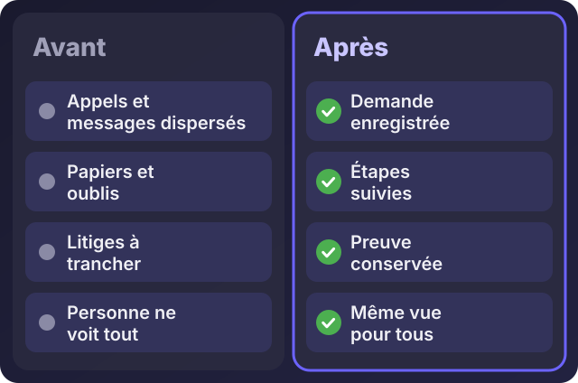
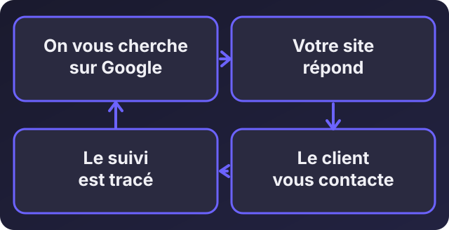

Accueil / Blog / Pour les dirigeants
Pour les dirigeantsPourquoi digitaliser son entreprise : ce que j'ai vu chez IvoirRapid

Écouter cet article · environ 6 min
Beaucoup de chefs d'entreprise me disent la même chose : « Ça marche comme ça depuis des années, pourquoi changer ? » C'est une vraie question, et elle mérite une vraie réponse. Je vais vous la donner à partir de ce que j'ai vu de mes propres yeux, en travaillant sur IvoirRapid, une société de livraison à Abidjan.
Je ne vous parlerai ni de technologie, ni de mode. Je vous parlerai de ce qui change dans une entreprise quand le travail devient visible, suivi et automatique.
Ce que j'ai observé chez IvoirRapid
Deux choses, qui ont changé le quotidien de l'entreprise.
D'abord, le site. IvoirRapid a un site conçu pour être trouvé sur Google. Depuis, l'entreprise reçoit chaque jour de nouveaux clients, de plus en plus au fil du temps, sans avoir à aller les chercher un par un. Ce ne sont pas des clients envoyés par une publicité à payer chaque semaine : ce sont des gens qui cherchaient ce service et qui ont trouvé l'entreprise.
Ensuite, la digitalisation du fonctionnement. Les factures, les demandes de retrait de chèque, le suivi des courses, les échanges en cas de désaccord : tout est passé sur des outils où chaque étape est enregistrée. Résultat : les litiges ont disparu de notre quotidien, et le travail a pris un autre rythme. Quand tout est écrit, daté et visible par tous, il n'y a presque plus rien à discuter.
Qu'est-ce que « digitaliser » veut dire, concrètement ?
Dans une entreprise, le travail circule : une demande arrive, quelqu'un la traite, on livre, on prouve que c'est fait, on facture, on encaisse. C'est ce qu'on appelle un flux.
Quand ce flux passe par des appels, des messages dispersés et des papiers, il est invisible. On ne sait pas où il en est. On ne peut pas prouver ce qui s'est passé. Et on perd du temps à le demander.
Digitaliser, c'est rendre ce flux visible et traçable. Chaque étape a un responsable, une date, une trace. Voici la différence :

Pourquoi un site fait venir des clients
Un site n'est pas une vitrine qu'on installe pour faire joli. C'est un vendeur qui travaille jour et nuit.

- On vous cherche sur Google. Quelqu'un tape ce dont il a besoin, avec sa ville.
- Votre site répond. Une page claire explique ce que vous faites, comment vous contacter, pourquoi vous faire confiance.
- Le client vous contacte, par WhatsApp ou par formulaire, au moment où il en a besoin.
- Le suivi est tracé, et le client satisfait parle de vous.
Sans site, votre entreprise n'existe pour Google que si quelqu'un d'autre parle de vous. Avec un site bien fait, vous êtes là au moment où le client cherche. C'est la différence entre aller chercher les clients et les laisser venir.
Pourquoi automatiser
L'automatisation répond à une question simple : qu'est-ce que quelqu'un fait chaque semaine, de la même façon, sans réfléchir ?
Relancer les factures, valider une demande, envoyer un rappel, recopier les mêmes informations d'un fichier à un autre. Ces tâches prennent des heures, provoquent des oublis, et n'apportent rien. Une machine les fait sans fatigue, sans erreur de copie, et à la bonne date.
Chez IvoirRapid, j'ai mis en place des circuits automatisés avec Google Sheets et Google Apps Script pour la validation, les relances et les décharges : moins de tâches manuelles, des délais de traitement plus courts. Ce que ça libère, ce n'est pas seulement du temps. C'est de l'attention pour ce qui compte : les clients, les décisions, la croissance.
Pourquoi confier cela à un expert
Tout le monde peut installer un outil. Le difficile, c'est de construire le bon, de le faire adopter et de le garder en état. Voici ce qui arrive souvent quand on bricole :
- Un outil par problème, sans lien entre eux, et personne ne sait où est l'information.
- Une seule personne qui sait comment ça marche. Quand elle part, tout s'arrête.
- Des données non sauvegardées et des accès partagés sans contrôle.
- Un outil trop compliqué, que l'équipe contourne.
- Un outil qui ne tient pas compte du terrain : réseau faible, téléphones modestes, habitudes de WhatsApp.
Un expert apporte autre chose que du code :
- Il commence par comprendre le flux, pas par choisir un logiciel.
- Il construit pour vos utilisateurs réels, pas pour une démonstration.
- Il installe, il forme, et il reste joignable quand quelque chose change.
- Il vous dit non quand un outil n'est pas nécessaire. Un simple tableau suffit parfois.
Par où commencer
Pas par un grand projet. Par une conversation et un seul flux.
- Listez vos flux : de la demande du client jusqu'à l'encaissement.
- Repérez où ça fait mal : où perd-on du temps, où oublie-t-on, où y a-t-il des désaccords ?
- Choisissez un seul flux : celui qui coûte le plus cher.
- Mesurez avant et après, avec vos propres chiffres. Pas de promesse universelle : chaque entreprise a ses propres résultats.
Si vous dirigez une entreprise
Les entreprises qui avancent ne sont pas celles qui travaillent le plus. Ce sont celles qui voient ce qui se passe chez elles, et qui ne perdent plus de temps à chercher qui a fait quoi.
Si vous voulez regarder ensemble ce qui peut être digitalisé chez vous, décrivez-moi votre activité sur WhatsApp. Je vous dirai honnêtement ce qui vaut la peine d'être fait, dans quel ordre, et ce qui peut attendre.